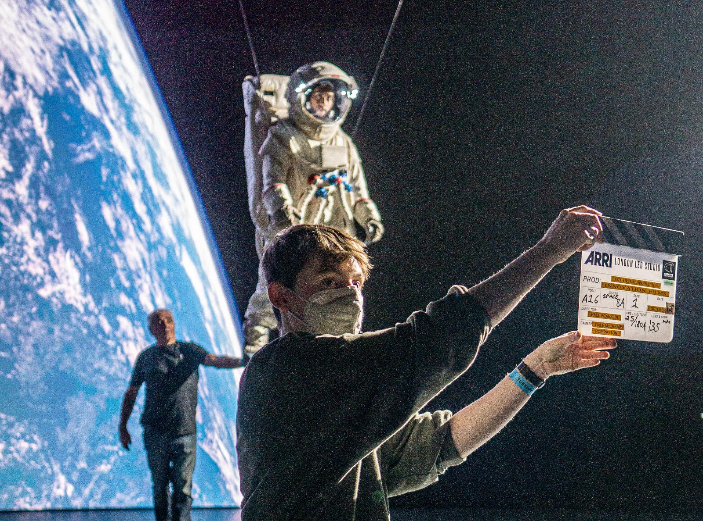
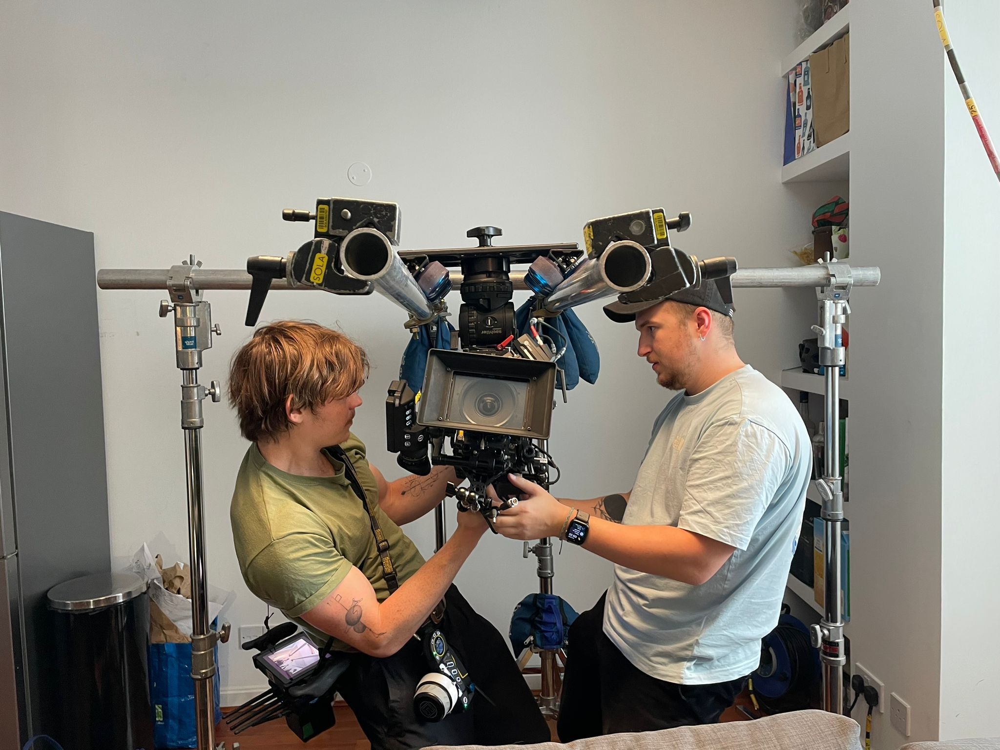
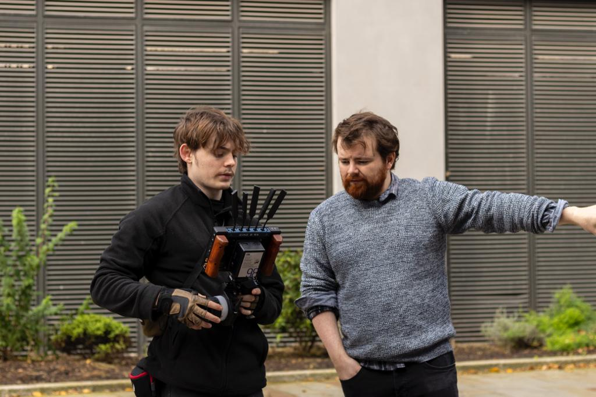

Camera Assistant
"Whether working as a Clapper Loader/2nd AC or stepping into the role of Focus Puller/1st AC, I bring precision, professionalism, and a passion for the craft to every project."

"With extensive experience in complex and bespoke rigging solutions, from custom camera setups to intricate stabilization systems, I thrive on the challenges of creating tailored configurations to meet the unique demands of each production, ensuring safety, reliability, and optimal performance."

"As a Focus Puller/1st AC, I am confident in handling the demands of achieving critical focus, managing camera builds, and collaborating closely with the Director of Photography to bring their vision to life. My ability to anticipate needs and adapt quickly under pressure ensures I deliver sharp, consistent results even in dynamic environments."
